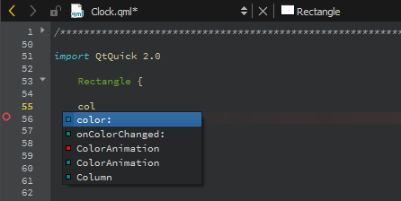
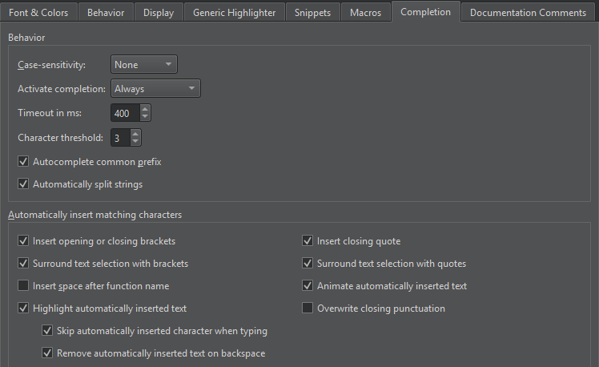
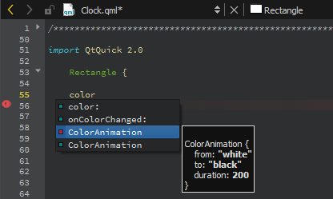
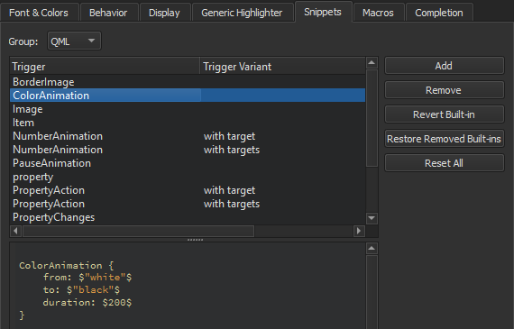

Completing Code
As you write code, Qt Design Studio suggests properties, IDs, and code snippets to complete the code. It shows a list of suggestions to the statement currently under your cursor. Press Tab or Enter to accept the selected suggestion and complete the code.
The following image displays suggestions for completing QML code:

To open the list of suggestions at any time, press Ctrl+Space. If only one option is available, Qt Design Studio inserts it automatically.
Specifying Completion Settings
To specify settings for code completion, select Preferences > Text Editor > Completion.

By default, code completion does not consider case. To apply full or first-letter case-sensitivity, select Full or First Letter in the Case-sensitivity field.
By default, code completion is always invoked, but you can change this behavior in the Activate completion field to invoke it Manually or When Triggered.
You can set a timeout in milliseconds for code completion in the Timeout in ms field.
In the Character threshold field, specify the number of characters you need to enter before code completion is triggered.
When completion is invoked manually, Qt Design Studio completes the common prefix of the list of suggestions. This is especially useful for classes with several similarly named members. To disable this functionality, deselect the Autocomplete common prefix check box.
Select the Automatically split strings check box to split a string to two lines by adding an end quote at the cursor position when you press Enter and a start quote at the beginning of the next line, before the rest of the string. In addition, pressing Shift+Enter inserts an escape character at the cursor position and moves the rest of the string to the next line.
Summary of Available Types
The following table lists available types for code completion and icon used for each.
| Icon | Description |
|---|---|
 | A QML type |
 | A QML code snippet |
Completing Code Snippets
Code snippets can consist of multiple variables that you specify values for. Select an item in the list and press Tab or Enter to complete the code. Press Tab to move between the variables and specify values for them. When you specify a value for a variable, all instances of the variable within the snippet are renamed.
The following image shows a QML code snippet:

Editing Code Snippets
Code snippets specify code constructs. You can add, modify, and remove snippets in the snippet editor. To open the editor, select Preferences > Text Editor > Snippets.
The following image shows built-in QML code snippets:

Qt Design Studio has built-in snippets in the following categories:
- Text snippets, which can have any text string. For example, code comments
- QML code snippets, which specify QML code constructs
Adding and Editing Snippets
Select a snippet in the list to edit it in the snippet editor. To add a new snippet, select Add. Specify a trigger and, if the trigger is already in use, an optional variant, which appear in the list of suggestions when you write code. Also specify a text string or QML code in the snippet editor, depending on the snippet category. The snippet editor offers:
- Highlighting
- Indentation
- Parentheses matching
- Basic code completion
Specify the variables for the snippets in the following format:
$variable$
The snippet editor does not check the syntax of the snippets that you edit or add. However, when you use the snippets, the code editor marks any errors by underlining them in red.
To discard the changes you made to a built-in snippet, select Revert Built-in.
Removing Snippets
The list of suggestions might show several similar built-in snippets for different use cases. To make it shorter when you write code, remove the built-in snippets that you do not need. If you need them later, you can restore them.
To remove snippets, select a snippet in the list, and then select Remove. To restore the removed snippets, select Restore Removed Built-ins.
Resetting Snippets
To remove all added snippets and to restore all removed snippets, select Reset All.
Note: If you now select OK or Apply, you permanently lose all your own snippets.